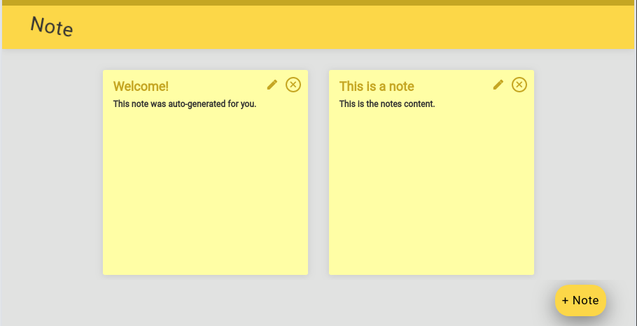

Code Snippets
Temperature Conversion
This Ruby program will prompt the user for a temperature in degrees Celsius and let the user know what the corresponding temperature is in Fahrenheit.
def celsiusToFahrenheit(c)
return c * 9/5 + 32
end
puts "Please enter a celsius temperature and I will convert it to farenheit. "
c = gets.to_f
f = celsiusToFahrenheit(c)
puts "The correct fahrenheit temperature for #{c} is #{f}"puts "Please enter a number."
num = gets.chomp.to_i
def set_ordinal(num)
right_digit = num % 10
if num >= 11 && num <= 13
puts "That's the #{num}th item."
elsif right_digit == 1
puts "That's the #{num}st item."
elsif right_digit == 2
puts "That's the #{num}nd item."
elsif right_digit == 3
puts "That's the #{num}rd item."
else puts "That's the #{num}th item."
end
end
set_ordinal(num)Ordinal Challenge
This Ruby program will convert a plain number to the ordinal of the number. So for example, if the user enters 2, it will display 2nd, if the user enters 3, it will display 3rd, etc.
Foobar
This Ruby program is an adaptation of a classic technical interview problem which displays sequences of the Foobar pattern.
def play_foobar(entry)
i = 1
while i <= entry
if i >= 3 && i % 3 == 0 && i % 5 == 0
puts ("foobar")
elsif i >= 3 && i % 3 == 0
puts ("foo")
elsif i >= 3 && i % 5 == 0
puts ("bar")
else
puts(i)
end
i += 1
end
end
puts ("What number do you want to start the game foobar with?")
entry = gets.chomp.to_i
play_foobar(entry)class Image
# Here is my initializer. It is formatted per the spec from Coding Boot Camp that the array should be made from 4 arrays
# or a two-dimensional array.
def initialize(arr)
@image = arr
end
def output_image
@image.each do |x|
x.each do |cell|
print cell
# This looks down from the rows
if i < @length - 1
if @image[i+1][j] == 0
@image[i+1][j] = 2
end
end
# This looks up from the rows
if i > 0 && @image[i-1][j] == 0
@image[i-1][j] = 2
end
# This looks to the right until it gets to the end.
if @image[i][j+1] == 0
@image[i][j+1] = 2
end
# This looks to te left. I tried to set this so it will never look over the side of the array.
# I'm afraid of what might happen if my program does that too muc.
if j > 0 && @image[i][j - 1] == 0
@image[i][j - 1] = 2
end
end
data = [[0, 0, 0, 0, 0, 0, 0],
[0, 0, 0, 0, 0, 0, 0],
[0, 0, 0, 0, 0, 0, 0],
[0, 0, 0, 0, 0, 0, 0],
[0, 0, 0, 1, 0, 0, 0],
[0, 0, 0, 0, 0, 0, 0],
[0, 0, 0, 0, 0, 0, 0],
[0, 0, 0, 0, 0, 0, 0]]
image = Image.new(data)
image.output_image
image.blur_image(5)
image.output_image
Image Blur
This program takes an input to say how far to blur from the points in the matrix that begin with a 1 in them. The array can be 4 items tall, but any width.
Web Apps
Note Application

An app for creating notes. The program is using ReactJS and NodeJS.
Regenerative Agriculture
A location specific gardening and farming application for regenerative agriculture. Uses Git and GitHub for version control, and launched on Heroku.
Quote Generator

A database-powered quote generator with a mobile-first design, using the Ruby on Rails framework, HTML, and CSS. Uses Git and GitHub for version control, and launched on Heroku.
Yelp Clone

A Yelp clone that integrates with the Google Maps API
and includes features like user comments, star ratings,
image uploading, and user authentication.
Two-Sided Market Place

A two-sided, video-streaming marketplace platform that
features credit card payment capabilities, user role
management, complex user interfaces, and advanced
database relationships.
Test Driven Development

An Instagram clone that was built using industry-standard, test-driven
development following numerous red/green/refactor cycles.
Single Page Todo Application

This single-page to-do application features a
fluid user interface that– by using JavaScript–
allows users to rapidly add dynamic content.
Agile Team Project

Worked on an Agile software development team building
a chess application. Under the guidance of a senior software engineer,
we had weekly Agile team meetings for code reviews, sprint planning,
and feature assignments.
Skills & Tools
Donny has developed proficiency and expertise in the following programming languages and comfort with the following tools.


Contact
Currently entertaining new opportunities. Please get in touch via email: